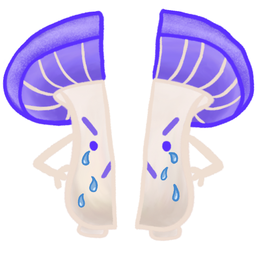
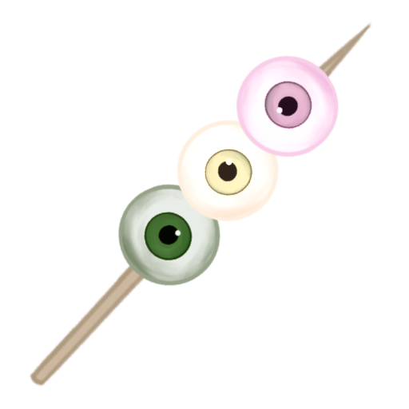
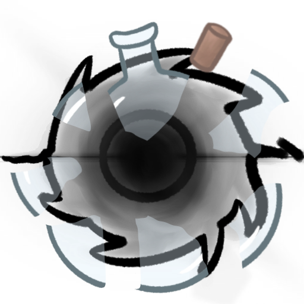
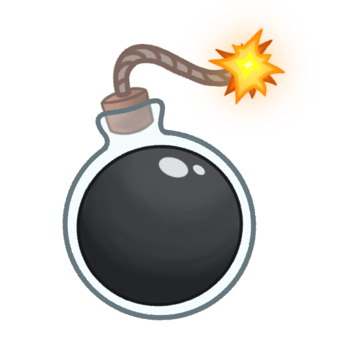
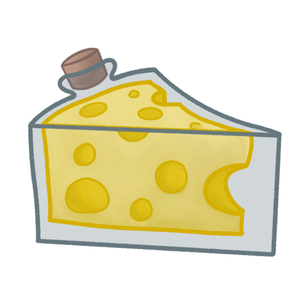
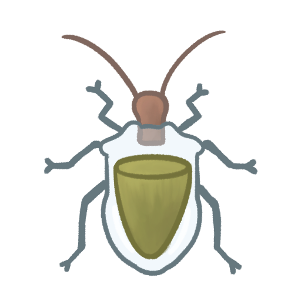

01
Critter's Cauldron







Critter's Cauldron is a mobile game where you are a mouse living in a potion shop. The witch who owns the shop ditches you to go on vacation, and you must fill in customer orders in her absence so you can pay rent and not be evicted. It is intended to be multiplayer, but networking functionality is still under development. The game also uses the gyroscope function for its potion making mini games. This project started as a semester long assignment, but the team has decided to continue development until further notice.
I worked primarily as the aesthetics lead, designer, and quality assurance analyst, but occasionally I would work on technical issues with the team when necessary to meet project deadlines. Funny story, I put 3D art as one of my skills, so I got put into my team as an artist, but my team wanted the game in 2D, and we had no other artists. As a result, I had to learn 2D art super fast in order to deliver. I do have 2D experience, but at the time I was way more comfortable in 3D. Now I feel like I have quality experience in both. One of my main jobs as the artist and a designer was to design unique gameplay mechanics and create assets to fit those experiences.
I drew pretty much every single asset in the game from tiles, to UI, to potions, to characters, etc. It was a tough learning curve as someone who only really had 3D experience, but I definitely saw improvement from the beginning of the semester until now. The difference between my first assets and later assets is laughable. There were lots of adjustments and scrapped assets due to a then-changing view of what we all wanted the game to look like. One of the biggest hurdles was the shift from normal art to mobile assets. I had to adjust to a new style in order to make the assets look good on mobile. For example, we would all agree an asset looked fine, until we put it into the game and all of the sudden the details and lines were practically invisible! I had to change my shading style and line thickness, among other things. As my skills improve, I have been replacing the current assets with new and improved versions, so the version on Itch is visually outdated.
I also worked on quality assurance. We would host regular playtests, and we'd use these to find bugs and test how well players responded to the gyroscope features. We'd collect this data and then analyze it after to see what we did right, but mostly what we did wrong. We'd use this information to shape our next sprints.
I was also the sound designer for the game, and I recorded sound effects and made an original track for the game. Unfortunately, the recorded sound effects did not make it into the version listed on Itch, so what is used now are my beta sound effects I created using digital instruments and synthesizers so that the team could better see where we wanted to go with sound direction. The self-recorded sound effects were edited in Reaper. The track currently in the game is also a work in progress and is in the process of being remade.